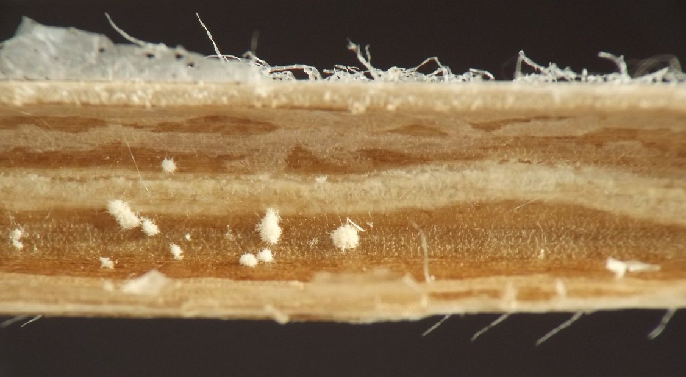
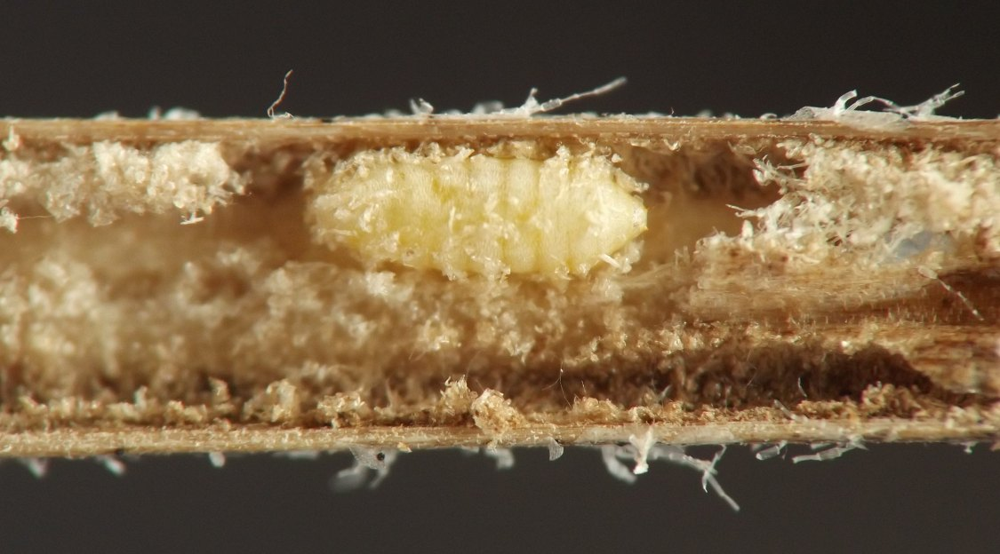
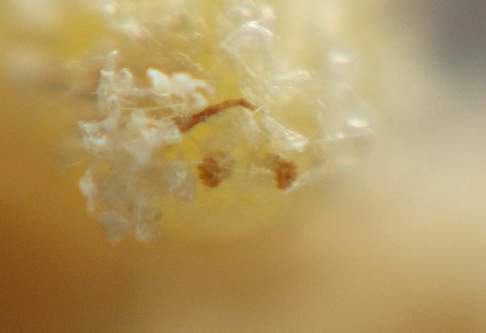
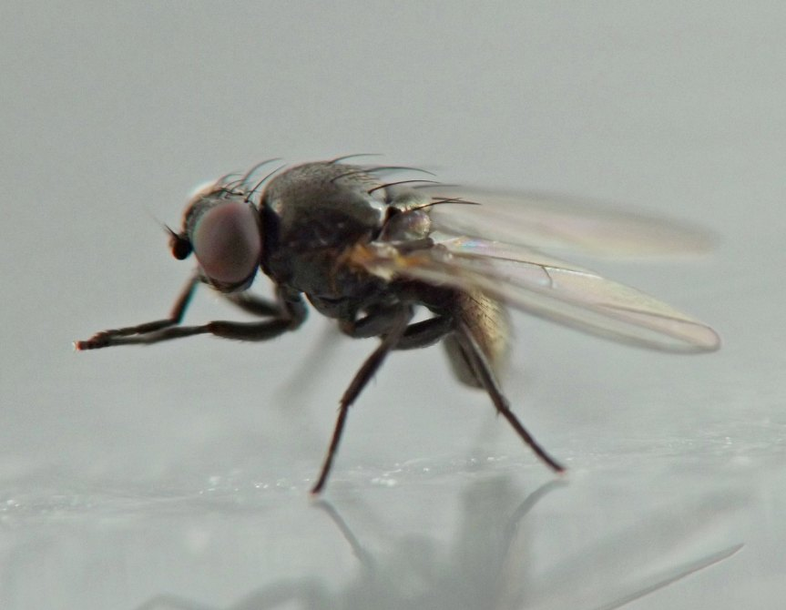
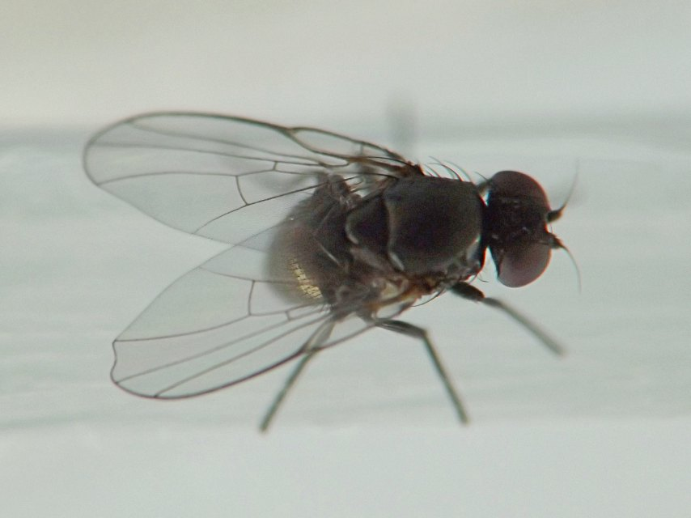

Stem borer (Diptera: Agromyzidae) in Blephilia
| Record no.: | 0100 |
|---|---|
| Feeding guild: | Stem borer |
| Taxonomy: | Diptera: Agromyzidae: Melanagromyza blephiliae |
| Stages observed: | trace, puparium, adult |
| Distribution observed: | IA |
| Hosts in Blephilia: | B. hirsuta (hairy woodmint) |
Larvae tunnel in the pithy inner lining of the stems, with puparia formed in the tunnels. A photographed puparium was straw-colored, with light brownish posterior spiracular plates separated by approximately twice their width, and spiracular horns not clearly discernible (thus either very small or not present).
Adults emerged from overwintered puparia in spring. Photographs of one male adult show a bronze iridescence on the abdomen. The species was formally described in Eiseman et al. (2026), where the images below also appear.

 Prev
Prev
{kind=link}
{kind=link}

{kind=link}

{kind=link}

{kind=link}

- Eiseman, C.S., Lonsdale, O., Feldman, T.S., and J. van der Linden. 2026. Thirty-three new species of Agromyzidae (Diptera) from the United States and Canada, with new host and distribution records for 154 additional species. Zootaxa 5745(1): 1-265.[return to in-text citation]
Page created: February 10, 2026. Last update: June 18, 2026